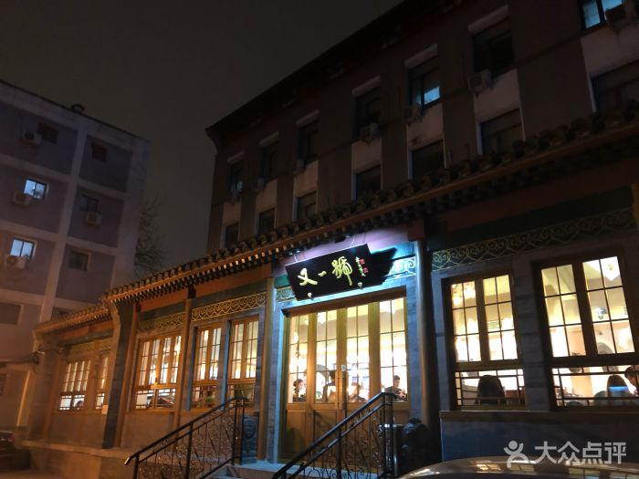
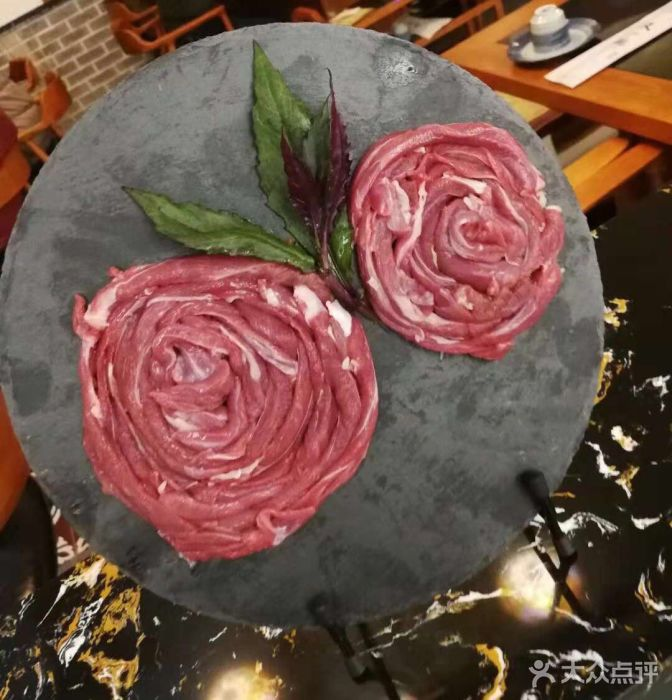
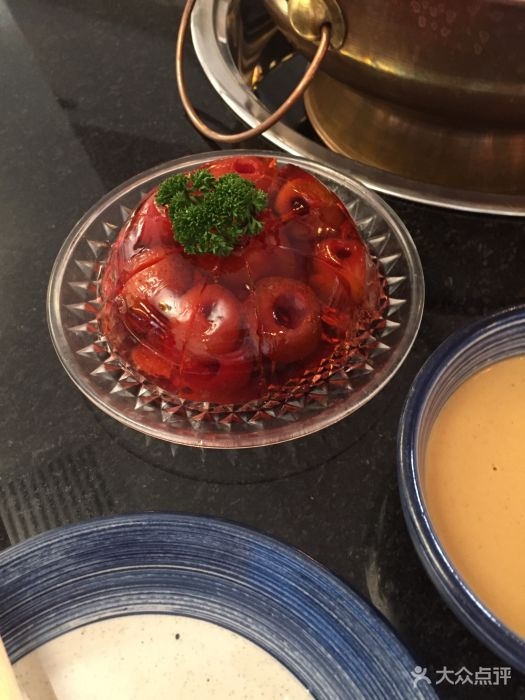

More Website Templates @ TemplateMonster.com - March 10, 2014!
<东郊民巷>又一號

人均：
￥107
/人
 扫一扫分享
扫一扫分享口味：9.3 环境：9.3 服务：9.3
地址：西打磨厂街北京同仁堂中医院北门西侧100米路北
电话：010-67029299
营业时间：周一至周日 10:00-21:30
写点评
饭店特色
老北京地道涮肉，肉质鲜嫩，肉类样式多，老少皆宜
店内装修古色古香，幽静的环境适合小型聚会。
交通指南

附近公交：
9路，20路，44路，599路，622路，特2路
地铁二号线五号线
9路，20路，44路，599路，622路，特2路
地铁二号线五号线
菜品推荐
D1
手切羊肉

手切鲜羊肉的最大特色就是手切羊肉，恰到好处的刀工使肉片的厚度非常均匀，涮起来特别有弹性，鲜嫩无比，久吃不腻。搭配上酸菜，那更是纯正的北京味。徘盘新颖，羊肉新鲜，可挂在盘子上不会掉落。
本店选料精细鲜嫩，肉片纸薄均匀，调料多样味美，涮肉醇香不膻，涮后即食。香味纯正，鲜嫩可口。切制羊肉薄如纸，匀如晶，齐如线，美如花，羊肉片要长17至20厘米，宽3至6厘米。
羊肉营养丰富，对肺结核、气管炎、哮喘、贫血、产后气血两虚、腹部冷痛、体虚畏寒、营养不良、腰膝酸软、阳痿早泄以及一切虚寒病症均有很大裨益；具有补肾壮阳、补虚温中等作用，男士适合经常食用。
本店选料精细鲜嫩，肉片纸薄均匀，调料多样味美，涮肉醇香不膻，涮后即食。香味纯正，鲜嫩可口。切制羊肉薄如纸，匀如晶，齐如线，美如花，羊肉片要长17至20厘米，宽3至6厘米。
羊肉营养丰富，对肺结核、气管炎、哮喘、贫血、产后气血两虚、腹部冷痛、体虚畏寒、营养不良、腰膝酸软、阳痿早泄以及一切虚寒病症均有很大裨益；具有补肾壮阳、补虚温中等作用，男士适合经常食用。
D2
爽口红果

爽口红果是老北京的传统小吃。看起来晶莹剔透，吃起来更是酸酸甜甜，是很地道的北京美味。
主要成分是山楂，富含多种高营养成份。本品配料以蜂蜜、白糖为主；含有人体多种必需的营养元素。
属食疗型休闲食品。并对高血压、心脑血管病等具有一定疗效；含有多种营养成份，具有开胃、软化血管等功效。
主要成分是山楂，富含多种高营养成份。本品配料以蜂蜜、白糖为主；含有人体多种必需的营养元素。
属食疗型休闲食品。并对高血压、心脑血管病等具有一定疗效；含有多种营养成份，具有开胃、软化血管等功效。
预定须知
★特价活动不能累计参加
★订餐电话为：010-67029299
★包间需体验预定
★订餐电话为：010-67029299
★包间需体验预定